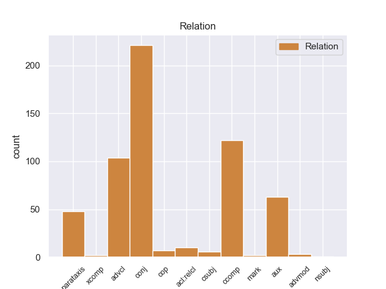
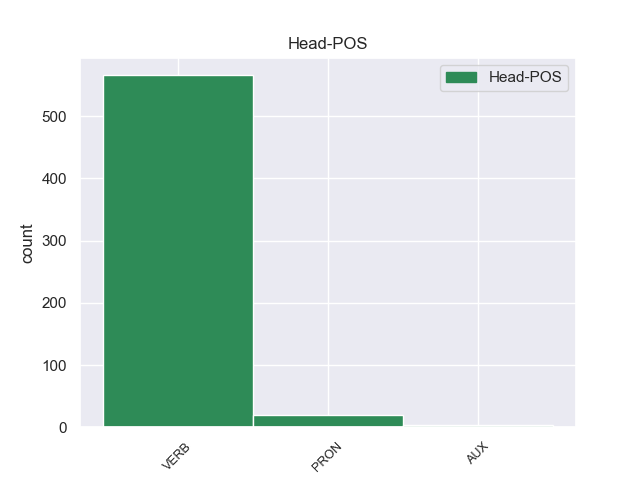
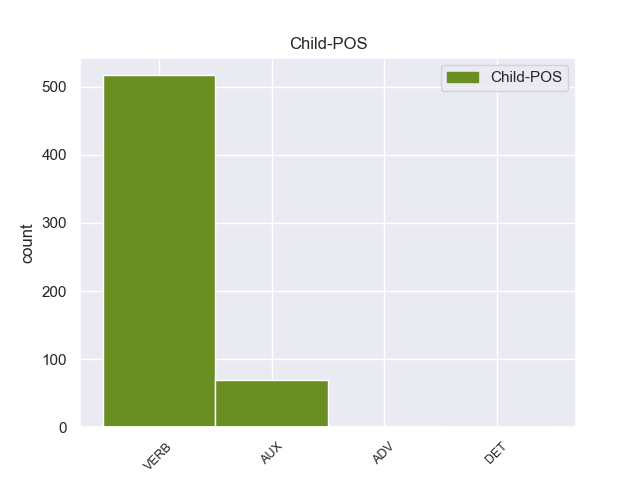

Distribution of features within this leaf



Agreement Rules sorted by frequency.
When the head token is VERB and the dependent token is VERB.
1 από _ _ _ _ 0 _ _ _
2 τα _ _ _ _ 0 _ _ _
3 δε _ _ _ _ 0 _ _ _
4 έγγραφα _ _ _ _ 0 _ _ _
5 της _ _ _ _ 0 _ _ _
6 υπόθεσης _ _ _ _ 0 _ _ _
7 προκύπτει προκύπτειr VERB _ Mood=Ind|Number=Sing|Person=3|Tense=Pres|VerbForm=Fin 0 _ _ _
8 ότι _ _ _ _ 0 _ _ _
9 δεν _ _ _ _ 0 _ _ _
10 φαίνεται φαίνεταιr VERB _ Mood=Ind|Number=Sing|Person=3|Tense=Pres|VerbForm=Fin 7 ccomp _ _
11 να _ _ _ _ 0 _ _ _
12 έχει _ _ _ _ 0 _ _ _
13 ληφθεί _ _ _ _ 0 _ _ _
14 υπόψη _ _ _ _ 0 _ _ _
15 η _ _ _ _ 0 _ _ _
16 σύσταση _ _ _ _ 0 _ _ _
17 να _ _ _ _ 0 _ _ _
18 διαβιβαστεί _ _ _ _ 0 _ _ _
19 η _ _ _ _ 0 _ _ _
20 αίτηση _ _ _ _ 0 _ _ _
21 άρσης _ _ _ _ 0 _ _ _
22 της _ _ _ _ 0 _ _ _
23 ασυλίας _ _ _ _ 0 _ _ _
24 μόνον _ _ _ _ 0 _ _ _
25 επί _ _ _ _ 0 _ _ _
26 τη _ _ _ _ 0 _ _ _
27 βάσει _ _ _ _ 0 _ _ _
28 ακριβέστερου _ _ _ _ 0 _ _ _
29 προσδιορισμού _ _ _ _ 0 _ _ _
30 όσον _ _ _ _ 0 _ _ _
31 αφορά _ _ _ _ 0 _ _ _
32 τους _ _ _ _ 0 _ _ _
33 τόπους _ _ _ _ 0 _ _ _
34 και _ _ _ _ 0 _ _ _
35 τα _ _ _ _ 0 _ _ _
36 πρόσωπα _ _ _ _ 0 _ _ _
37 που _ _ _ _ 0 _ _ _
38 εμπλέκονται _ _ _ _ 0 _ _ _
39 σ _ _ _ _ 0 _ _ _
40 την _ _ _ _ 0 _ _ _
41 υπόθεση _ _ _ _ 0 _ _ _
42 . _ _ _ _ 0 _ _ _
When the head token is VERB and the dependent token is VERB. and the head token is VERB and the dependent token is AUX.
1 Θα θα AUX _ Mood=Ind|Number=Plur|Person=1|Tense=Pres|VerbForm=Fin 2 aux _ _
2 μεταβιβάσω μεταβιβάσω VERB _ Mood=Ind|Number=Sing|Person=1|Tense=Pres|VerbForm=Fin 0 _ _ _
3 , _ _ _ _ 0 _ _ _
4 ωστόσο _ _ _ _ 0 _ _ _
5 , _ _ _ _ 0 _ _ _
6 το _ _ _ _ 0 _ _ _
7 μήνυμα _ _ _ _ 0 _ _ _
8 αυτό _ _ _ _ 0 _ _ _
9 σ _ _ _ _ 0 _ _ _
10 τον _ _ _ _ 0 _ _ _
11 συνάδελφό _ _ _ _ 0 _ _ _
12 μου _ _ _ _ 0 _ _ _
13 , _ _ _ _ 0 _ _ _
14 κ. _ _ _ _ 0 _ _ _
15 Bolkestein _ _ _ _ 0 _ _ _
16 . _ _ _ _ 0 _ _ _
When the head token is VERB and the dependent token is VERB. and the head token is VERB and the dependent token is AUX. and the head token is PRON and the dependent token is VERB.
1 Δεν _ _ _ _ 0 _ _ _
2 επιτρέπεται _ _ _ _ 0 _ _ _
3 να _ _ _ _ 0 _ _ _
4 κλείνουμε _ _ _ _ 0 _ _ _
5 τα _ _ _ _ 0 _ _ _
6 μάτια _ _ _ _ 0 _ _ _
7 μπροστά _ _ _ _ 0 _ _ _
8 σε _ _ _ _ 0 _ _ _
9 όσα όσα PRON _ Case=Acc|Gender=Masc|Number=Sing|Person=3|PrepCase=Npr|PronType=Prs 0 _ _ _
10 συμβαίνουν συμβαίνο VERB _ Mood=Ind|Number=Plur|Person=3|Tense=Pres|VerbForm=Fin 9 acl:relcl _ _
11 σ _ _ _ _ 0 _ _ _
12 την _ _ _ _ 0 _ _ _
13 Τσετσενία _ _ _ _ 0 _ _ _
14 απλά _ _ _ _ 0 _ _ _
15 και _ _ _ _ 0 _ _ _
16 μόνο _ _ _ _ 0 _ _ _
17 επειδή _ _ _ _ 0 _ _ _
18 υποστηρίζουμε _ _ _ _ 0 _ _ _
19 ότι _ _ _ _ 0 _ _ _
20 πρέπει _ _ _ _ 0 _ _ _
21 να _ _ _ _ 0 _ _ _
22 καταπολεμήσουμε _ _ _ _ 0 _ _ _
23 την _ _ _ _ 0 _ _ _
24 τρομοκρατία _ _ _ _ 0 _ _ _
25 . _ _ _ _ 0 _ _ _
When the head token is VERB and the dependent token is VERB. and the head token is VERB and the dependent token is AUX. and the head token is PRON and the dependent token is VERB. and the head token is PRON and the dependent token is AUX.
1 Criticable _ _ _ _ 0 _ _ _
2 o _ _ _ _ 0 _ _ _
3 no _ _ _ _ 0 _ _ _
4 , _ _ _ _ 0 _ _ _
5 es _ _ _ _ 0 _ _ _
6 cierto _ _ _ _ 0 _ _ _
7 que _ _ _ _ 0 _ _ _
8 su _ _ _ _ 0 _ _ _
9 música _ _ _ _ 0 _ _ _
10 puede _ _ _ _ 0 _ _ _
11 parecer _ _ _ _ 0 _ _ _
12 tan _ _ _ _ 0 _ _ _
13 transgresora _ _ _ _ 0 _ _ _
14 y _ _ _ _ 0 _ _ _
15 novedosa _ _ _ _ 0 _ _ _
16 que _ _ _ _ 0 _ _ _
17 quizás _ _ _ _ 0 _ _ _
18 se _ _ _ _ 0 _ _ _
19 pase _ _ _ _ 0 _ _ _
20 de _ _ _ _ 0 _ _ _
21 tuerca _ _ _ _ 0 _ _ _
22 , _ _ _ _ 0 _ _ _
23 pero _ _ _ _ 0 _ _ _
24 lo él PRON _ Case=Acc|Gender=Masc|Number=Sing|Person=3|PrepCase=Npr|PronType=Prs 0 _ _ _
25 que _ _ _ _ 0 _ _ _
26 no _ _ _ _ 0 _ _ _
27 vamos _ _ _ _ 0 _ _ _
28 a _ _ _ _ 0 _ _ _
29 negar _ _ _ _ 0 _ _ _
30 es ser AUX _ Mood=Ind|Number=Sing|Person=3|Tense=Pres|VerbForm=Fin 24 cop _ _
31 que _ _ _ _ 0 _ _ _
32 ayer _ _ _ _ 0 _ _ _
33 gustaron _ _ _ _ 0 _ _ _
34 - _ _ _ _ 0 _ _ _
35 y _ _ _ _ 0 _ _ _
36 mucho _ _ _ _ 0 _ _ _
37 - _ _ _ _ 0 _ _ _
38 . _ _ _ _ 0 _ _ _
When the head token is VERB and the dependent token is VERB. and the head token is VERB and the dependent token is AUX. and the head token is PRON and the dependent token is VERB. and the head token is PRON and the dependent token is AUX. and the head token is AUX and the dependent token is VERB.
1 Για _ _ _ _ 0 _ _ _
2 να _ _ _ _ 0 _ _ _
3 το _ _ _ _ 0 _ _ _
4 θέσουμε _ _ _ _ 0 _ _ _
5 ξεκάθαρα _ _ _ _ 0 _ _ _
6 , _ _ _ _ 0 _ _ _
7 η _ _ _ _ 0 _ _ _
8 μόνη _ _ _ _ 0 _ _ _
9 διαφορά _ _ _ _ 0 _ _ _
10 ανάμεσα _ _ _ _ 0 _ _ _
11 σε _ _ _ _ 0 _ _ _
12 έναν _ _ _ _ 0 _ _ _
13 επίσημο _ _ _ _ 0 _ _ _
14 αντιπρόσωπο _ _ _ _ 0 _ _ _
15 που _ _ _ _ 0 _ _ _
16 παρέχει _ _ _ _ 0 _ _ _
17 υπηρεσίες _ _ _ _ 0 _ _ _
18 μετά _ _ _ _ 0 _ _ _
19 την _ _ _ _ 0 _ _ _
20 πώληση _ _ _ _ 0 _ _ _
21 σήμερα _ _ _ _ 0 _ _ _
22 και _ _ _ _ 0 _ _ _
23 έναν _ _ _ _ 0 _ _ _
24 επίσημο _ _ _ _ 0 _ _ _
25 επισκευαστή _ _ _ _ 0 _ _ _
26 σ _ _ _ _ 0 _ _ _
27 το _ _ _ _ 0 _ _ _
28 προτεινόμενο _ _ _ _ 0 _ _ _
29 καθεστώς _ _ _ _ 0 _ _ _
30 αύριο _ _ _ _ 0 _ _ _
31 είναι ίναιer AUX _ Mood=Ind|Number=Sing|Person=3|Tense=Pres|VerbForm=Fin 0 _ _ _
32 ότι _ _ _ _ 0 _ _ _
33 ο _ _ _ _ 0 _ _ _
34 τελευταίος _ _ _ _ 0 _ _ _
35 μπορεί _ _ _ _ 0 _ _ _
36 να _ _ _ _ 0 _ _ _
37 μην _ _ _ _ 0 _ _ _
38 έχει tειr VERB _ Mood=Ind|Number=Sing|Person=3|Tense=Pres|VerbForm=Fin 31 ccomp _ _
39 έκθεση _ _ _ _ 0 _ _ _
40 από _ _ _ _ 0 _ _ _
41 την _ _ _ _ 0 _ _ _
42 οποία _ _ _ _ 0 _ _ _
43 να _ _ _ _ 0 _ _ _
44 πωλεί _ _ _ _ 0 _ _ _
45 αυτοκίνητα _ _ _ _ 0 _ _ _
46 . _ _ _ _ 0 _ _ _
When the head token is VERB and the dependent token is VERB. and the head token is VERB and the dependent token is AUX. and the head token is PRON and the dependent token is VERB. and the head token is PRON and the dependent token is AUX. and the head token is AUX and the dependent token is VERB. and the head token is VERB and the dependent token is ADV.
1 Πρόκειται _ _ _ _ 0 _ _ _
2 για _ _ _ _ 0 _ _ _
3 ένα _ _ _ _ 0 _ _ _
4 μεγάλο _ _ _ _ 0 _ _ _
5 επίτευγμα _ _ _ _ 0 _ _ _
6 σχετικά _ _ _ _ 0 _ _ _
7 με _ _ _ _ 0 _ _ _
8 την _ _ _ _ 0 _ _ _
9 οδική _ _ _ _ 0 _ _ _
10 ασφάλεια _ _ _ _ 0 _ _ _
11 , _ _ _ _ 0 _ _ _
12 δεδομένου _ _ _ _ 0 _ _ _
13 ότι _ _ _ _ 0 _ _ _
14 η _ _ _ _ 0 _ _ _
15 κούραση _ _ _ _ 0 _ _ _
16 προφανώς _ _ _ _ 0 _ _ _
17 επηρεάζει _ _ _ _ 0 _ _ _
18 όλους _ _ _ _ 0 _ _ _
19 τους _ _ _ _ 0 _ _ _
20 οδηγούς _ _ _ _ 0 _ _ _
21 με _ _ _ _ 0 _ _ _
22 τον _ _ _ _ 0 _ _ _
23 ίδιο _ _ _ _ 0 _ _ _
24 τρόπο _ _ _ _ 0 _ _ _
25 , _ _ _ _ 0 _ _ _
26 είτε _ _ _ _ 0 _ _ _
27 εργάζονται εργάζονταr VERB _ Mood=Ind|Number=Plur|Person=3|Tense=Pres|VerbForm=Fin 0 _ _ _
28 σε _ _ _ _ 0 _ _ _
29 επιχείρηση _ _ _ _ 0 _ _ _
30 είτε _ _ _ _ 0 _ _ _
31 αυτοαπασχολούνται αυτοαπασχολούντ ADV _ Mood=Ind|Number=Plur|Person=3|Tense=Pres|VerbForm=Fin 27 conj _ _
32 . _ _ _ _ 0 _ _ _
When the head token is VERB and the dependent token is VERB. and the head token is VERB and the dependent token is AUX. and the head token is PRON and the dependent token is VERB. and the head token is PRON and the dependent token is AUX. and the head token is AUX and the dependent token is VERB. and the head token is VERB and the dependent token is ADV. and the head token is AUX and the dependent token is AUX.
1 Τέταρτον _ _ _ _ 0 _ _ _
2 : _ _ _ _ 0 _ _ _
3 καλώ _ _ _ _ 0 _ _ _
4 επιπλέον _ _ _ _ 0 _ _ _
5 την _ _ _ _ 0 _ _ _
6 Επιτροπή _ _ _ _ 0 _ _ _
7 να _ _ _ _ 0 _ _ _
8 ενεργήσει _ _ _ _ 0 _ _ _
9 σύμφωνα _ _ _ _ 0 _ _ _
10 με _ _ _ _ 0 _ _ _
11 τον _ _ _ _ 0 _ _ _
12 εξής _ _ _ _ 0 _ _ _
13 κανόνα _ _ _ _ 0 _ _ _
14 : _ _ _ _ 0 _ _ _
15 όσο _ _ _ _ 0 _ _ _
16 μικρότερες _ _ _ _ 0 _ _ _
17 είναι _ _ _ _ 0 _ _ _
18 οι _ _ _ _ 0 _ _ _
19 ενισχύσεις _ _ _ _ 0 _ _ _
20 , _ _ _ _ 0 _ _ _
21 τόσο _ _ _ _ 0 _ _ _
22 λιγότερες _ _ _ _ 0 _ _ _
23 θα _ _ _ _ 0 _ _ _
24 πρέπει poπεr AUX _ Mood=Ind|Number=Plur|Person=3|Tense=Pres|VerbForm=Fin 26 aux _ _
25 να _ _ _ _ 0 _ _ _
26 είναι είνar AUX _ Mood=Ind|Number=Plur|Person=3|Tense=Pres|VerbForm=Fin 0 _ _ _
27 οι _ _ _ _ 0 _ _ _
28 γραφειοκρατικής _ _ _ _ 0 _ _ _
29 φύσεως _ _ _ _ 0 _ _ _
30 απαιτήσεις _ _ _ _ 0 _ _ _
31 προς _ _ _ _ 0 _ _ _
32 τους _ _ _ _ 0 _ _ _
33 συμμετέχοντες _ _ _ _ 0 _ _ _
34 . _ _ _ _ 0 _ _ _
When the head token is VERB and the dependent token is VERB. and the head token is VERB and the dependent token is AUX. and the head token is PRON and the dependent token is VERB. and the head token is PRON and the dependent token is AUX. and the head token is AUX and the dependent token is VERB. and the head token is VERB and the dependent token is ADV. and the head token is AUX and the dependent token is AUX. and the head token is VERB and the dependent token is DET.
1 Η _ _ _ _ 0 _ _ _
2 Ρωσία _ _ _ _ 0 _ _ _
3 υπέδειξε _ _ _ _ 0 _ _ _
4 τον _ _ _ _ 0 _ _ _
5 γιό _ _ _ _ 0 _ _ _
6 του _ _ _ _ 0 _ _ _
7 βασιλιά _ _ _ _ 0 _ _ _
8 των _ _ _ _ 0 _ _ _
9 Ελλήνων _ _ _ _ 0 _ _ _
10 Γεωργίου _ _ _ _ 0 _ _ _
11 του _ _ _ _ 0 _ _ _
12 Α' _ _ _ _ 0 _ _ _
13 , _ _ _ _ 0 _ _ _
14 τον _ _ _ _ 0 _ _ _
15 πρίγκιπα _ _ _ _ 0 _ _ _
16 Γεώργιο _ _ _ _ 0 _ _ _
17 , _ _ _ _ 0 _ _ _
18 ο ο DET _ Case=Acc|Gender=Masc|Number=Sing|Person=3|PrepCase=Npr|PronType=Prs 21 nsubj _ _
19 οποίος _ _ _ _ 0 _ _ _
20 και _ _ _ _ 0 _ _ _
21 επελέγη επελέγar VERB _ Mood=Ind|Number=Sing|Person=3|Tense=Past|VerbForm=Fin 0 _ _ _
22 τελικά _ _ _ _ 0 _ _ _
23 . _ _ _ _ 0 _ _ _
Disagree Examples:
1 Le _ _ _ _ 0 _ _ _
2 pido pedir VERB _ Mood=Ind|Number=Sing|Person=1|Tense=Pres|VerbForm=Fin 0 _ _ _
3 que _ _ _ _ 0 _ _ _
4 lo _ _ _ _ 0 _ _ _
5 alise alisar VERB _ Mood=Sub|Number=Sing|Person=3|Tense=Pres|VerbForm=Fin 2 ccomp _ _
6 para _ _ _ _ 0 _ _ _
7 poder _ _ _ _ 0 _ _ _
8 salir _ _ _ _ 0 _ _ _
9 con _ _ _ _ 0 _ _ _
10 dignidad _ _ _ _ 0 _ _ _
11 . _ _ _ _ 0 _ _ _
1 " _ _ _ _ 0 _ _ _
2 Yo _ _ _ _ 0 _ _ _
3 esto _ _ _ _ 0 _ _ _
4 lo _ _ _ _ 0 _ _ _
5 viví viví VERB _ Mood=Ind|Number=Sing|Person=1|Tense=Past|VerbForm=Fin 31 ccomp _ _
6 siempre _ _ _ _ 0 _ _ _
7 y _ _ _ _ 0 _ _ _
8 por _ _ _ _ 0 _ _ _
9 eso _ _ _ _ 0 _ _ _
10 me _ _ _ _ 0 _ _ _
11 fui _ _ _ _ 0 _ _ _
12 de _ _ _ _ 0 _ _ _
13 el _ _ _ _ 0 _ _ _
14 radicalismo _ _ _ _ 0 _ _ _
15 : _ _ _ _ 0 _ _ _
16 cada _ _ _ _ 0 _ _ _
17 vez _ _ _ _ 0 _ _ _
18 que _ _ _ _ 0 _ _ _
19 se _ _ _ _ 0 _ _ _
20 discute _ _ _ _ 0 _ _ _
21 el _ _ _ _ 0 _ _ _
22 Presupuesto _ _ _ _ 0 _ _ _
23 , _ _ _ _ 0 _ _ _
24 la _ _ _ _ 0 _ _ _
25 oposición _ _ _ _ 0 _ _ _
26 se _ _ _ _ 0 _ _ _
27 vuelve _ _ _ _ 0 _ _ _
28 oficialista _ _ _ _ 0 _ _ _
29 " _ _ _ _ 0 _ _ _
30 , _ _ _ _ 0 _ _ _
31 agregó agregar VERB _ Mood=Ind|Number=Sing|Person=3|Tense=Past|VerbForm=Fin 0 _ _ _
32 Carrió _ _ _ _ 0 _ _ _
33 . _ _ _ _ 0 _ _ _
1 " _ _ _ _ 0 _ _ _
2 Yo _ _ _ _ 0 _ _ _
3 esto _ _ _ _ 0 _ _ _
4 lo _ _ _ _ 0 _ _ _
5 viví viví VERB _ Mood=Ind|Number=Sing|Person=1|Tense=Past|VerbForm=Fin 0 _ _ _
6 siempre _ _ _ _ 0 _ _ _
7 y _ _ _ _ 0 _ _ _
8 por _ _ _ _ 0 _ _ _
9 eso _ _ _ _ 0 _ _ _
10 me _ _ _ _ 0 _ _ _
11 fui _ _ _ _ 0 _ _ _
12 de _ _ _ _ 0 _ _ _
13 el _ _ _ _ 0 _ _ _
14 radicalismo _ _ _ _ 0 _ _ _
15 : _ _ _ _ 0 _ _ _
16 cada _ _ _ _ 0 _ _ _
17 vez _ _ _ _ 0 _ _ _
18 que _ _ _ _ 0 _ _ _
19 se _ _ _ _ 0 _ _ _
20 discute _ _ _ _ 0 _ _ _
21 el _ _ _ _ 0 _ _ _
22 Presupuesto _ _ _ _ 0 _ _ _
23 , _ _ _ _ 0 _ _ _
24 la _ _ _ _ 0 _ _ _
25 oposición _ _ _ _ 0 _ _ _
26 se _ _ _ _ 0 _ _ _
27 vuelve volver VERB _ Mood=Ind|Number=Sing|Person=3|Tense=Pres|VerbForm=Fin 5 parataxis _ _
28 oficialista _ _ _ _ 0 _ _ _
29 " _ _ _ _ 0 _ _ _
30 , _ _ _ _ 0 _ _ _
31 agregó _ _ _ _ 0 _ _ _
32 Carrió _ _ _ _ 0 _ _ _
33 . _ _ _ _ 0 _ _ _
1 Puse puse VERB _ Mood=Ind|Number=Sing|Person=1|Tense=Past|VerbForm=Fin 0 _ _ _
2 5,32 _ _ _ _ 0 _ _ _
3 litros _ _ _ _ 0 _ _ _
4 antes _ _ _ _ 0 _ _ _
5 de _ _ _ _ 0 _ _ _
6 devolver _ _ _ _ 0 _ _ _
7 la _ _ _ _ 0 _ _ _
8 ( _ _ _ _ 0 _ _ _
9 tengo _ _ _ _ 0 _ _ _
10 el _ _ _ _ 0 _ _ _
11 ticket _ _ _ _ 0 _ _ _
12 de _ _ _ _ 0 _ _ _
13 la _ _ _ _ 0 _ _ _
14 gasolinera _ _ _ _ 0 _ _ _
15 ) _ _ _ _ 0 _ _ _
16 pero _ _ _ _ 0 _ _ _
17 , _ _ _ _ 0 _ _ _
18 para _ _ _ _ 0 _ _ _
19 mi _ _ _ _ 0 _ _ _
20 sorpresa _ _ _ _ 0 _ _ _
21 , _ _ _ _ 0 _ _ _
22 en _ _ _ _ 0 _ _ _
23 la _ _ _ _ 0 _ _ _
24 empresa _ _ _ _ 0 _ _ _
25 de _ _ _ _ 0 _ _ _
26 alquiler _ _ _ _ 0 _ _ _
27 cargaron cargar VERB _ Mood=Ind|Number=Plur|Person=3|Tense=Past|VerbForm=Fin 1 conj _ _
28 luego _ _ _ _ 0 _ _ _
29 7 _ _ _ _ 0 _ _ _
30 litros _ _ _ _ 0 _ _ _
31 . _ _ _ _ 0 _ _ _
1 Yo _ _ _ _ 0 _ _ _
2 acudo acudo VERB _ Mood=Ind|Number=Sing|Person=1|Tense=Pres|VerbForm=Fin 0 _ _ _
3 a _ _ _ _ 0 _ _ _
4 esta _ _ _ _ 0 _ _ _
5 clinica _ _ _ _ 0 _ _ _
6 , _ _ _ _ 0 _ _ _
7 lo _ _ _ _ 0 _ _ _
8 considero _ _ _ _ 0 _ _ _
9 un _ _ _ _ 0 _ _ _
10 buen _ _ _ _ 0 _ _ _
11 profesional _ _ _ _ 0 _ _ _
12 , _ _ _ _ 0 _ _ _
13 se _ _ _ _ 0 _ _ _
14 molesta molestar VERB _ Mood=Ind|Number=Sing|Person=3|Tense=Pres|VerbForm=Fin 2 parataxis _ _
15 en _ _ _ _ 0 _ _ _
16 explicar _ _ _ _ 0 _ _ _
17 me _ _ _ _ 0 _ _ _
18 lo _ _ _ _ 0 _ _ _
19 que _ _ _ _ 0 _ _ _
20 va _ _ _ _ 0 _ _ _
21 a _ _ _ _ 0 _ _ _
22 hacer _ _ _ _ 0 _ _ _
23 y _ _ _ _ 0 _ _ _
24 las _ _ _ _ 0 _ _ _
25 opciones _ _ _ _ 0 _ _ _
26 que _ _ _ _ 0 _ _ _
27 tengo _ _ _ _ 0 _ _ _
28 para _ _ _ _ 0 _ _ _
29 dicho _ _ _ _ 0 _ _ _
30 tratamiento _ _ _ _ 0 _ _ _
31 , _ _ _ _ 0 _ _ _
32 el _ _ _ _ 0 _ _ _
33 hecho _ _ _ _ 0 _ _ _
34 que _ _ _ _ 0 _ _ _
35 cuente _ _ _ _ 0 _ _ _
36 también _ _ _ _ 0 _ _ _
37 con _ _ _ _ 0 _ _ _
38 la _ _ _ _ 0 _ _ _
39 opinión _ _ _ _ 0 _ _ _
40 de _ _ _ _ 0 _ _ _
41 uno _ _ _ _ 0 _ _ _
42 da _ _ _ _ 0 _ _ _
43 mucho _ _ _ _ 0 _ _ _
44 a _ _ _ _ 0 _ _ _
45 su _ _ _ _ 0 _ _ _
46 favor _ _ _ _ 0 _ _ _
47 . _ _ _ _ 0 _ _ _